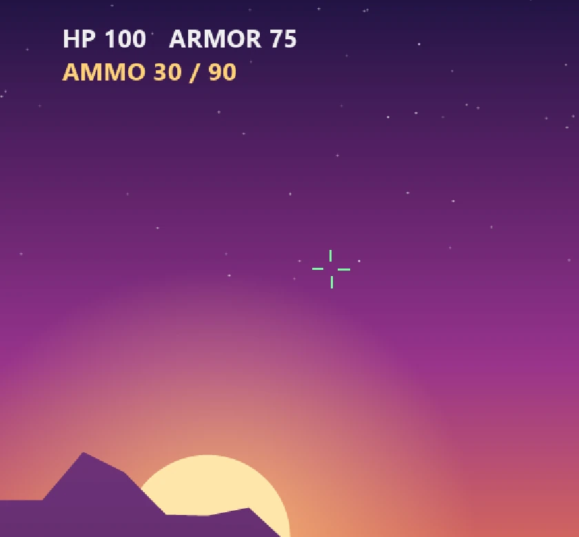
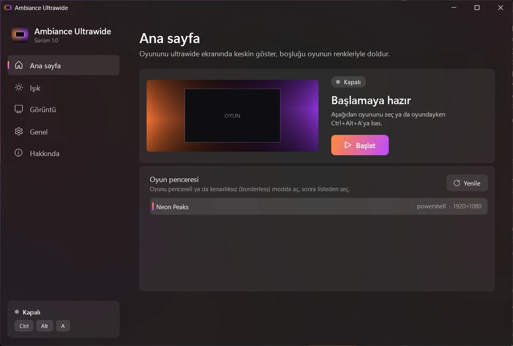
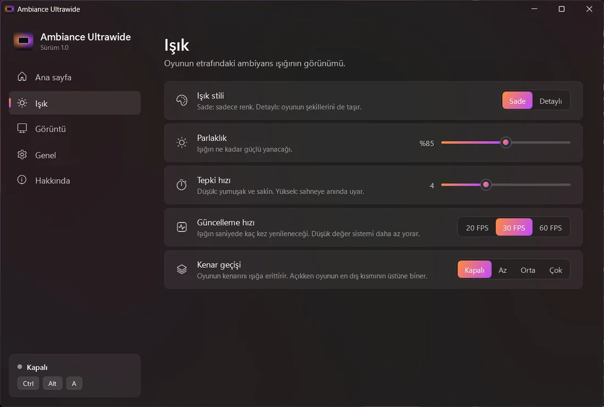

Ambiance Ultrawide
Keskin oyunlar. Ambiyans ışığı. Ultrawide için.
Ultrawide monitörlerde bulanıklık olmadan keskin oyun görüntüsü ve oyunun kendi renklerinden ambiyans ışığı. FPS kaybı yok, yaklaşık %1 işlemci.
Ücretsiz · Açık kaynak · Windows 10/11 · 12 dil

Oyun keskin kalır, boşluk oyunun kendi ışığıyla dolar
Bulanık düşük çözünürlüğe son
Sol: Windows çözünürlüğü düşürülmüş. Sağ: Ambiance Ultrawide.


FPS kaybetmeden ekranı doldur
Oyun aynı pikselleri çizer, Windows ekranda büyük gösterir

Sade ya da detaylı ışık
Sakin bir renk parıltısı ya da oyunun şekillerini taşıyan ışık

Oyununu seç, Başlat'a bas
Ya da oyundayken Ctrl+Alt+A

Işığı zevkine göre ayarla
Stil, parlaklık, tepki hızı ve güncelleme hızı

Özellikler
Ekran kartıyla yakalama, yaklaşık %1 işlemci. Oyun belleğine dokunmaz.
- Oyunun kendi renklerinden ambiyans ışığı
- Çözünürlük düşürmenin bulanıklığı olmadan keskin görüntü
- Pencere kenarlarını kaldırır, boyutlandırır ve ortalar
- FPS kaybı olmadan ekranı doldurma
- Ekran kartıyla yakalama, yaklaşık %1 işlemci
- Sade ve Detaylı ışık stilleri
- Parlaklık, tepki hızı ve güncelleme hızı ayarları
- Oyun belleğine dokunmaz, veri toplamaz
Hakkında
Ultrawide monitörde oyunu daha düşük çözünürlükte oynamak için Windows çözünürlüğünü düşürünce görüntü bulanıklaşır. Ambiance Ultrawide bu sorunu çözer.
Oyunu pencerede, piksel piksel birebir ve bulanıklaşmadan gösterir. Kenarlarda kalan boşluğu da televizyonlardaki ambiyans ışığı gibi oyunun kendi renkleriyle doldurur. Siyah bantlar yerine oyunun atmosferini taşıyan yumuşak bir ışık görürsün.
İstersen görüntüyü Windows'un kendi büyütme sistemiyle ekranı dolduracak kadar büyütebilirsin. Oyun yine aynı sayıda piksel çizer, bu yüzden FPS'in düşmez.
Ambiance Ultrawide çok hafiftir. Görüntüyü ekran kartıyla yakalar ve işlemcini neredeyse hiç kullanmaz. Oyunların belleğine ya da dosyalarına dokunmaz, sadece ekranda görüneni okur. Veri toplamaz ve internete bağlanmaz.
Kullanımı: Oyunu pencereli ya da kenarlıksız (borderless) modda aç, Ambiance Ultrawide'da listeden seç ve Başlat'a bas. Ya da oyundayken Ctrl+Alt+A'ya bas. Ctrl+Alt+Z büyütmeyi açıp kapatır.
12 dilde arayüz. Ücretsiz ve açık kaynak.